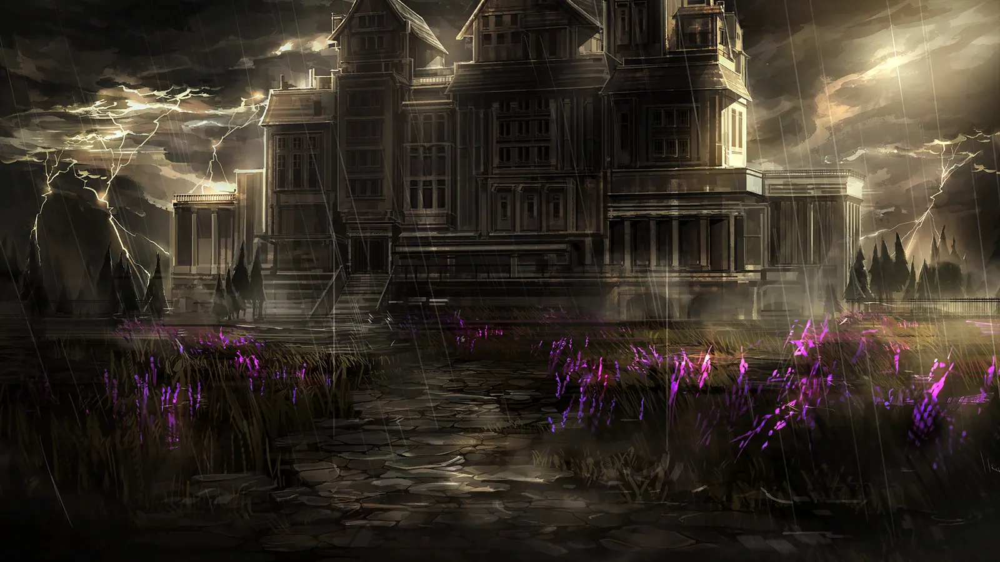
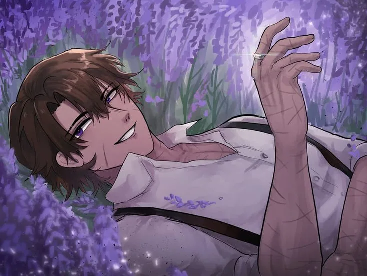
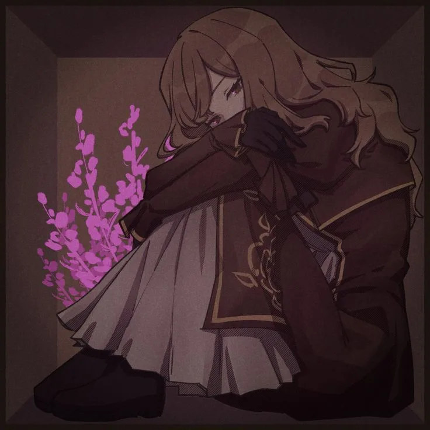
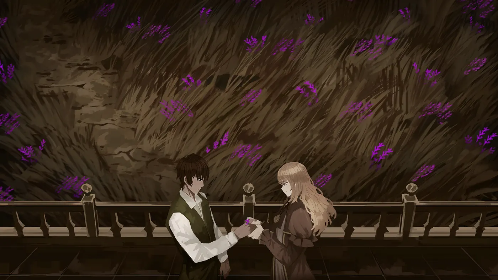
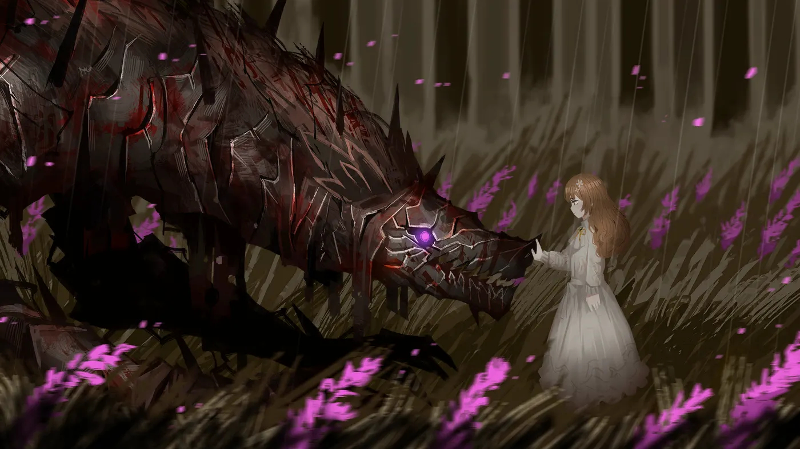
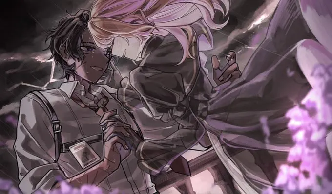
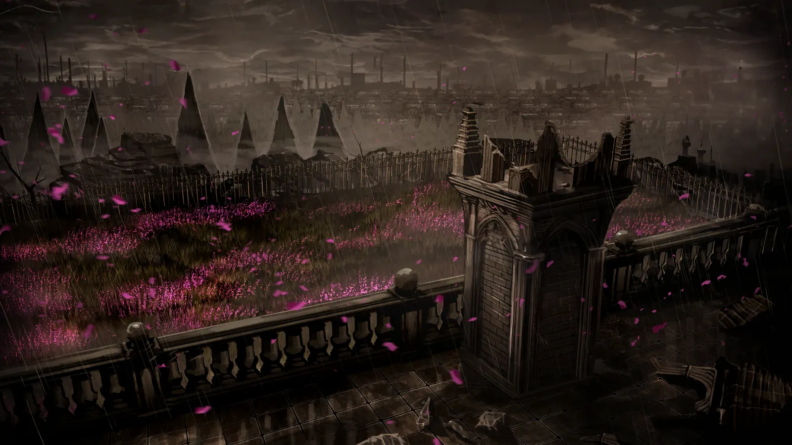
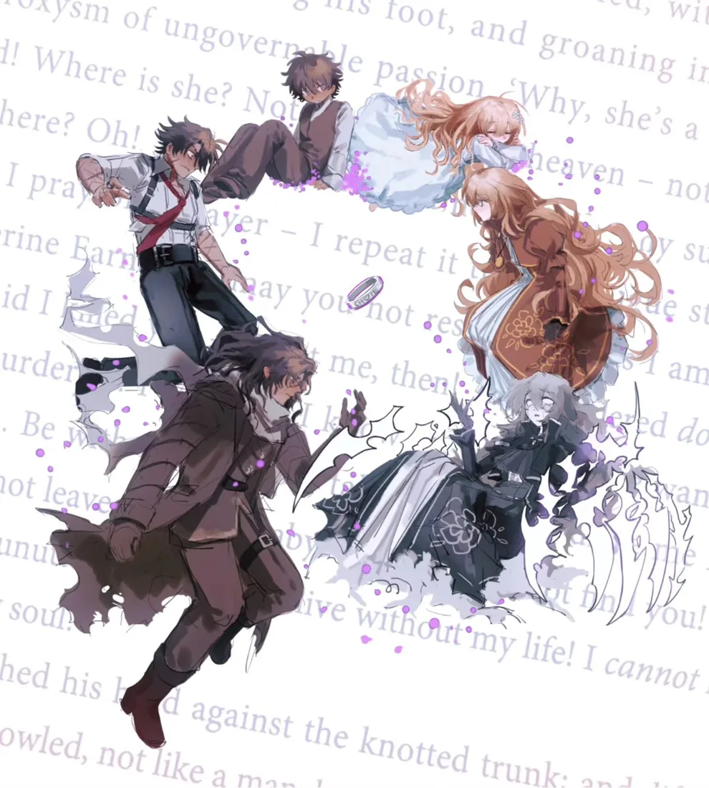
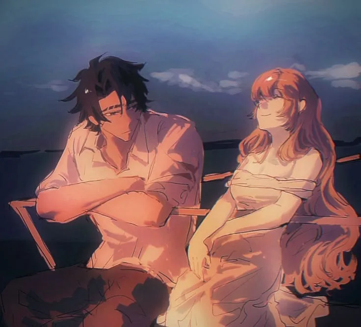
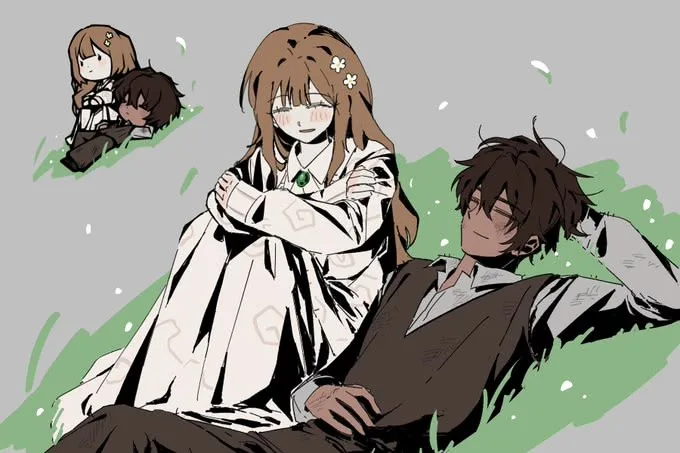

Canto VI. Di ladang heather, dua jiwa mengundang Anda
Sabtu, 13 Maret 2027
Ketuk kaca sampai seluruh layar retak.
Kenali mereka satu per satu.

Mempelai pria
Tumbuh di pinggir badai, belajar menjaga dengan tangan yang tak pandai lembut. Bekas luka di lengannya adalah cerita yang hanya ia bagi pada satu orang.

Mempelai wanita
Memilih ladang heather ketimbang aula pesta. Ia menyapa semua orang, termasuk mereka yang takut pada Heathcliff, dan tak pernah ikut takut.
Tiga pecahan dari satu badai yang panjang.

Janji pertama tidak butuh emas. Cukup bunga liar dari sisi pagar.

Dunia melihat monster. Catherine melihat Heathcliff.

Hujan boleh sederas apa pun. Tangan itu tetap tak dilepas.

Hitung mundur hingga akad dimulai.

Whatever our souls are made of, his and mine are the same.Emily Brontë, Wuthering Heights, 1847

Di ladang heather yang sama, kami memilih melangkah bersama. Hadirlah dan doakan kami di hari itu.
Sabtu, 13 Maret 2027
09.00 WIB
Sabtu, 13 Maret 2027
11.00 – 14.00 WIB
Hitam, putih gading, atau ungu heather.
Wuthering Heights
Canterbury, Selandia Baru
Buka di Google MapsSudut-sudut kenangan di bawah naungan Wuthering Heights.
Rumah di Tengah Badai
Ladang Heather dari Balkon Atap
Lembaran Kisah yang Tertulis

Mohon beri kabar sebelum 1 Maret 2027.